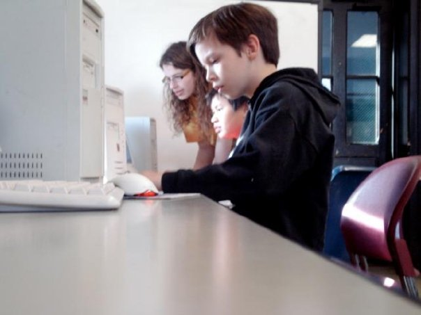

Why does WiCS exist?

Women in Computer Science is an organization dedicated to help encourage and support women in Computer Science and related fields. We hold weekly social events, engage in community outreach and occasionally hold professional events.
The Facts
Major Gender Total ===================== CS M 273 CS F 37 %12 -------------------- IMGD M 144 IMGD F 15 %9 -------------------- RBE M 106 RBE F 15 %12 -------------------- CS grad M 95 CS grad F 26 %21 --------------------